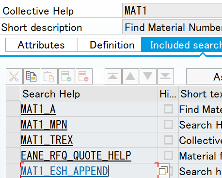
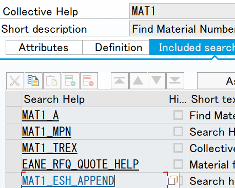
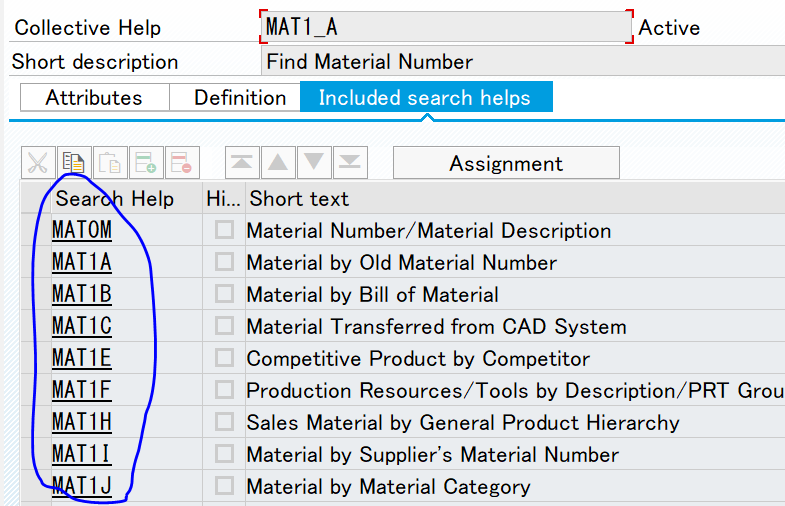
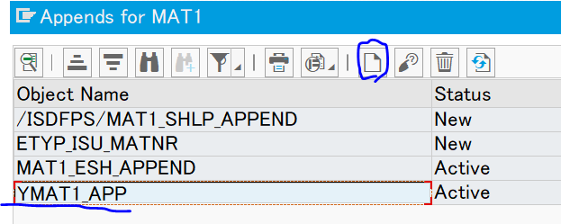
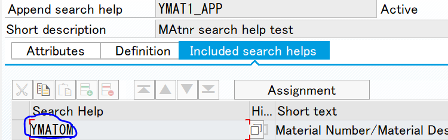
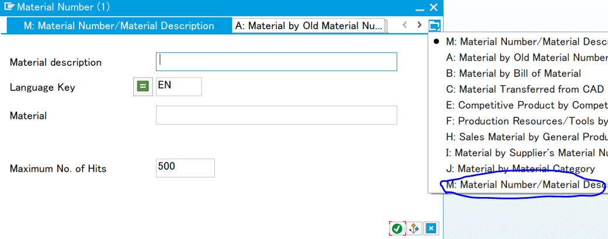
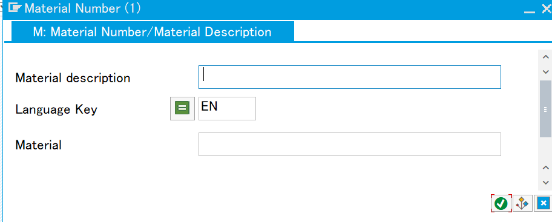
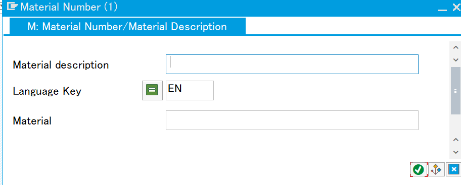

Suppress standard search help and replace it with custom search help(with SH exit).
I'm working with a system where a single client within a single instance had multiple company code configured. So some users are assigned a role where the company code authorization is restricted to a single company(let's say AAAA) code in the authority profile(Auth object for company code is F_BKPF_BUK and =AAAA is specified). In this way, that user are only allowed to display the account document of company code AAAA in FB03. However when the user use F4 search help for the company code, it shows all the company code in T001. It's not harmful to be able to see all other companies whether their competitors or not. The problem is that the user can also use F4 to look at the material name and business partner that does not belong to the company code assigned to the user. Therefore, we need to suppress the standard search help to show all the data. Instead we need to replace it with our custom search help, embedded with search help exit that does authority check. In this section, I will demonstrate how to suppress standard material(MARA-MATNR) search help and replace it with my custom search help.
 

MARA-MATNR is using standard search help called MAT1. In SE11, MAT1 is a collective search help and it contains seceral other standard search helps like MAT1_A, MAT1_MPN and MAT1_TREX.

If we dig down these search helps, MAT1_A for example, there are many more standard search helps. These are Elementary Help and it's the bottom of the collective search help MAT1_A.

If you use F4 to prompt materials search help from MM03, there are massive number of tabs available. These are the Elementary Help attached to MAT1_A and MAT1_TREX and MAT1_TREX, which are attached to the top node MAT1_A.
Now we know how it works, let's add our custom search help to MAT1. Go to SE11 and in display MAT1(Do NOT need to change the standard object!) Goto -> Append search help. Click on the white tile and create your own append search help(YMAT1_APP for an example). 
The next step is to create our elementary search help. Go to SE11 and create one by coying the standard MAT0M and name it YMAT0M. Change selection method to MARA and set Dialog type of your choice. Save and activate it. Go back to YMAT1_APP and include YMAT0M and click assignment button to assign parameters. Save and activate. 
Let's try if the custom search help is working. Go to MM03 and use F4. Hmm..our custom search help looks insignificantly small...
This is because the standard elementary search help attached to MAT1 is still showing.
 

I struggled here because I cannot delete those standard search help from MAT1 since that will be modifying the standard object. Through pain staking effor, I manage to find a way. Set all the standard elementary search help attached to MAT1 to our YMAT1_APP. Then check all their hide buttons except my YMAT0M. By using hide button, the standard help will no longer appear on the custom search help. Go to MM03 and click F4 agian. Voila.